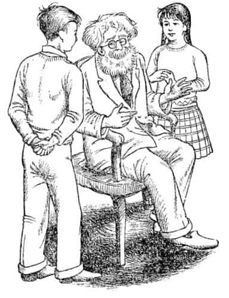
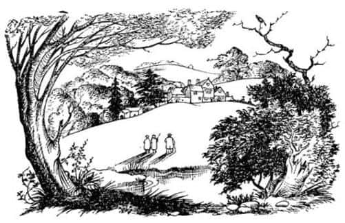

Tekrar Kapının Bu Tarafında
Saklambaç oyunu hâlâ devam ettiğinden diğerlerini bulmak biraz zaman aldı. Fakat sonunda bir araya geldiklerinde (bu, zırhın bulunduğu uzun odada olmuştu) Lucy patlarcasına:
“Peter! Susan! Hepsi gerçek. Edmund da gördü. Dolaptan geçerek gidilebilen bir ülke var. Edmund ve ben gittik oraya. Orada, ormanda birbirimizle karşılaştık. Haydi Edmund, onlara her şeyi anlatsana.”
“Bütün bunlar ne demek, Ed” dedi Peter.
Şimdi bu hikâyenin en kötü yanına geldik. Bu ana kadar Edmund hastaydı ve aksiliği üzerindeydi. Lucy’nin haklı çıkmasına canı sıkılmıştı ve nasıl davranacağına henüz karar vermemişti. Peter aniden bu soruyu sorduğunda, o anda aklına gelen en kötü ve haince şeyi yapmaya karar verdi. Lucy’yi hayal kırıklığına uğratacaktı.
“Anlat Ed” dedi Susan.
Edmund, sanki Lucy’den çok daha büyükmüş gibi (gerçekte aralarında sadece bir yaş vardı) küçümseyerek ona baktı, alaylı bir şekilde hafifçe güldü ve dedi ki, “Ah, evet, Lucy ve ben – dolaptaki ülke hikâyesinin doğru olduğunu varsayarak – oynuyorduk. Kuşkusuz yalnızca eğlenmek için. Gerçekte orada bir şey yok tabii.”
Zavallı Lucy, Edmund’a baktı ve koşarak odadan dışarıya çıktı.
Dakikalar ilerledikçe daha da kötü biri olan Edmund büyük bir başarı kazandığını düşünerek hemen ardından ekledi, “Al işte yine. Neyi var bunun? Küçük çocukların en kötü yanı bu, her zaman—”
“Bana bak” dedi Peter, öfkeyle ona dönerek, “kapa çeneni! Dolap hakkında bu saçmalığa başladığından beri Lu’ya aynı bir canavar gibi davrandın ve şimdi de onunla oyun oynayıp kışkırtıyorsun. Bunu yalnızca garezinden dolayı yaptığına inanıyorum.”
“Bu çok saçma” dedi Edmund şaşkınlıkla.
“Elbette çok saçma” dedi Peter, “demek istediğim de bu. Evden ayrıldığımızda Lu tamamen normaldi, fakat buraya geldiğimizden beri ya kafayı üşütmüş ya da korkunç bir yalancıymış gibi görünüyor. Her ne olursa olsun, bir gün kusur bulup alay ederek, ertesi gün de cesaretlendirerek nereye varacağını sanıyorsun?”
“Ben sandım ki – ben sandım ki” dedi Edmund; ancak başka bir söz aklına gelmedi.
“Sen hiçbir şey sanmadın” dedi Peter, “bu yalnızca garez. Sen kendinden küçüklere kötü davranmaktan hep hoşlandın. Bunu daha önce de okulda görmüştük.
“Yeter artık” dedi Susan. “Aranızın açılması hiçbir şeyi düzeltmez. Gidip Lucy’yi bulalım.”
Epeyce sonra Lucy’yi bulduklarında onun ağlamış olduğunu görmek hiç de şaşırtıcı değildi. Hikâyesinin doğruluğunda ısrar etti ve dedi ki:
“Ne düşündüğünüz, ne söyleyeceğiniz beni ilgilendirmez. Profesör’e anlatabilirsiniz, anneme yazabilirsiniz ya da ne isterseniz onu yapın. Ben o dolapta bir Faun’la karşılaştığımı biliyorum ve keşke orada kalsaydım, sizler birer canavarsınız.”
Kötü bir akşamdı. Lucy çok mutsuzdu ve Edmund planının beklediği gibi gitmediğini hissetmeye başlamıştı. Daha büyük olan diğer ikisi, Lucy’nin gerçekten aklını kaçırdığını düşünmeye başlamışlardı. Lucy uyuduktan sonra uzun süre koridorda bekleyip fısıldayarak konuştular.
Sonunda ertesi sabah gidip her şeyi Profesör’e anlatmaya karar verdiler. “Eğer o, Lu’ya bir şeyler olduğunu düşünürse babamıza mektup yazar” dedi Peter; “bu iş bizim boyumuzu aştı.”
Böylece gidip Profesör’ün kapısını çaldılar. Profesör, “gelin” dedikten sonra ayağa kalkıp onlar için sandalye buldu ve nasıl yardımcı olabileceğini sordu. Çocuklar her şeyi anlatıp bitirene kadar hiç sözlerini kesmeden oturup dinledi. Ondan sonra uzunca bir zaman hiçbir şey söylemedi. Sonunda boğazını temizleyerek ikisinin de beklediği en son şeyi söyledi:

“Kız kardeşinizin hikâyesinin doğru olmadığını nereden biliyorsunuz?”
“Fakat—” diye başladı Susan ve sonra sustu. Yaşlı adamın yüzündeki ciddiyeti görebiliyorlardı. Susan kendini toparladı ve “Ama Edmund yalancıktan oynadıklarını söyledi” dedi.
“Asıl sorun da bu” dedi Profesör, “gerçekten düşünmemiz gereken nokta, çok dikkatli düşünmemiz gereken nokta. Örneğin – bu soruyu sorduğum için beni mazur görün – deneyimleriniz kız kardeşinizin mi yoksa erkek kardeşinizin mi daha güvenilir olduğunu söylüyor size? Yani hangisi doğruyu söyler?”
“Tuhaf olan da bu, efendim” dedi Peter. “Şimdiye kadar bu soruya cevabım hep Lucy olurdu.”
“Senin fikrin ne, canım?” dedi Profesör Susan’a dönerek.
“Şey” dedi Susan, “genelde ben de Peter ile aynı fikirdeyim, fakat bu doğru olamaz – tüm bu orman ve Faun hakkındaki hikâyeler yani.”
“Bu benim bilgimin ötesinde” dedi Profesör. “Yalnız, her zaman gerçeği söylediğine inandığınız birini yalancılıkla suçlamak çok ciddi bir şey; gerçekten çok ciddi bir şey.”
“Yalan söylemediğinden korkuyoruz” dedi Susan, “Lucy’nin bir sorunu olabileceğini düşünüyoruz.”
“Delilik mi demek istiyorsun?” dedi Profesör soğukça. “Bu konuda kafanız rahat olsun. Birinin ona yalnızca bakıp konuşması deli olmadığını göstermeye yeter.”
“Ama o zaman” dedi Susan ve sustu. Yetişkin birinin Profesör gibi konuşacağını rüyasında görse inanmazdı ve ne düşüneceğini bilmiyordu.
“Mantık!” dedi Profesör mırıldanarak. “Okullarda neden mantık öğretmiyorlar ki? Yalnızca üç olasılık var. Kız kardeşiniz ya yalan söylüyor, ya deli, ya da doğruyu söylüyor. Onun yalan söylemeyeceğini biliyorsunuz. Deli olmadığı da açıkça görülüyor. Bu durumda aksine deliller olmadıkça onun doğru söylediğini kabul etmek zorundayız.”
Susan dikkatle Profesör’e baktı ve yüzündeki ifadeden onlarla alay etmediğine tamamıyla emin oldu.
“Fakat bu nasıl doğru olabilir efendim” dedi Peter.
“Neden soruyorsun?” dedi Profesör.
“Şey, ilk önce, bu gerçekse niçin herkes her seferinde dolaba girdiğinde bu ülkeyi bulamıyor? Demek istiyorum ki biz baktığımızda orada hiçbir şey yoktu; Lucy bile sanki varmış gibi davranmadı.”
“Bunun onunla ilgisi ne ki?” dedi Profesör.
“Şey, efendim, bir şey gerçekse her zaman orada olması gerekir.”
“Gerekir mi?” dedi Profesör, ve Peter ne diyeceğini bilemedi.
“Fakat zamanı yoktu ki” dedi Susan. “Lucy’nin bir yere gitmeye zamanı yoktu, öyle bir yer olsa bile. Odayı terk ettiğimiz anda koşarak arkamızdan geldi. Bir dakikadan az zaman geçmişti ve Lucy sanki saatlerce uzaklardaymış gibi davranıyordu.”
“Zaten onun hikâyesini doğrulayacak şey de bu” dedi Profesör. “Bu evde eğer gerçekten başka bir dünyaya açılan bir kapı varsa (sizi uyarmalıyım ki burası garip bir ev ve ben bile bu ev hakkında pek az bilgi sahibiyim) ve diyorum ki eğer Lucy başka bir dünyaya gittiyse, o başka dünyanın kendine ait başka bir zamanı olduğunu ve orada ne kadar uzun süre kalırsan kal bunun bizim vaktimizi hiç almayacağını öğrenmek beni asla şaşırtmaz. Diğer taraftan, onun yaşındaki kızların böyle bir şeyi uyduracağını sanmam. Eğer yalancıktan oynuyor olsaydı, size görünüp hikâyesini anlatmadan önce uygunca bir zaman saklanırdı.”
“Yani gerçekten” dedi Peter, “başka dünyaların – her yerde, köşenin ardında – olabileceğini mi söylemek istiyorsunuz?”
“Gerçeklik nereden baktığına bağlıdır” dedi Profesör gözlüklerini çıkarıp silmeye başlayarak. Kendi kendine mırıldanıyordu, “Bunlara bu okullarda ne öğretiyorlar bilmem ki?”
“O halde ne yapmalıyız?” dedi Susan. Konuşmanın asıl konudan uzaklaşmaya başladığını hissediyordu.
“Sevgili küçük bayan” dedi Profesör ikisine de keskin bir bakış fırlatarak, “kimsenin önermediği bir plan daha var ve de gerçekten denemeye değer.”
“Ne planı?” dedi Susan.
“Herkes kendi işiyle uğraşmayı deneyebilir” dedi Profesör. Ve bu da konuşmanın sonu oldu.
Bundan sonra Lucy için her şey daha iyi oldu. Peter, Edmund’un onunla alay etmemesi için elinden geleni yapıyordu. Ne Lucy ne de diğerleri dolap hakkında konuşmak istiyorlardı; tehlikeli bir konu haline gelmişti. Böylece bir süre için tüm macera sona ermiş gibi göründü, fakat bu doğru değildi.
Profesör’ün de hakkında pek az şey bildiği bu ev, o kadar eski ve ünlüydü ki İngiltere’nin her tarafından insanlar gelir ve ziyaret için izin isterlerdi. Seyahat kitapları ve hatta tarih kitaplarının bile bahsettiği türden bir evdi ve öyle olması da gerekir. Çünkü hakkında çok çeşitli hikâyeler anlatılırdı. Bazı hikâyeler şu anda size anlatmakta olduğumdan daha da garipti. Gezgin grupları gelip evi görmek istediğinde Profesör her zaman izin verirdi ve Bayan Macready onlara çevreyi gezdirir, resimlerden, zırhtan ve kütüphanedeki nadir kitaplardan söz ederdi. Bayan Macready çocuklardan hoşlanmazdı ve ziyaretçilere bildiklerini anlatırken sözünün kesilmesini sevmezdi. Neredeyse ilk geldikleri günün sabahında Peter ve Susan’a (başka bir sürü talimatla birlikte), “Lütfen ben evde ziyaretçileri gezdirirken ayakaltında dolaşmayın” demişti.
“Sanki yabancı yaşlılar grubunu takip ederek sabah saatlerini boş yere harcamak isteyen varmış gibi!” demişti Edmund. Aslında diğerleri de öyle düşünüyordu. Serüvenin ikinci kez başlaması bu şekilde oldu.

Birkaç gün sonra Peter ve Edmund zırha bakıp onu parçalarına ayırıp ayıramayacaklarını düşünürken, kızlar odaya daldılar ve “Dikkat! Macready’yle birlikte bir çete geliyor” dediler.
“Çabuk” dedi Peter ve dördü birden odanın öbür yanındaki kapıdan dışarı fırladılar. Fakat yeşil odaya ve onun ötesindeki kütüphaneye vardıklarında aniden önlerinde sesler işittiler. Bayan Macready’nin, ziyaretçileri bekledikleri gibi ön taraftaki merdivenlerden değil, arkadakilerden getirmekte olduğunu anladılar. Ve bundan sonra ya akıllarını kaybettiler, ya Bayan Macready onları yakalamaya çalışıyordu ya da evdeki bir büyü canlanıp onları Narnia’ya götürmeye çalışıyordu, çünkü nereye gitseler takip ediliyorlardı; sonunda Susan dedi ki, “Kahrolası ziyaretçiler! Haydi – onlar geçene kadar dolap odasına gidelim. Kimse bizi oraya kadar izlemez.” Fakat içeriye girdikleri anda koridordan gelen sesleri duydular – sonra birinin kapıyla oynadığını – ve sonra da kapı kolunun döndüğünü gördüler.
“Çabuk” dedi Peter, “başka hiçbir yer yok” ve dolabın kapısını açtı. Dördü birden içeriye doluştular ve nefes nefese karanlıkta oturdular. Peter kapıyı çekmişti, ama kapatmamıştı; çünkü kuşkusuz, her akıllı kişinin yaptığı gibi asla kendisini dolaba kapatmaması gerektiğini hatırlamıştı.